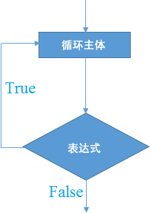

C# do while循环
在 C# 中，do while 循环同样用于多次迭代一部分程序，但它与我们前面学习的 for 循环和 while 循环不同，for 循环和 while 循环会在循环开始之前先判断表达式的结果，只有表达式结果为真时才会开始循环，而 do while 循环会先执行一遍循环主体中的代码，然后再判断表达式的结果。也就是说，不论表达式的结果如何，do while 循环至少会执行一次。
do while 循环的语法格式如下：
do while 循环中，程序会先执行
【示例】使用 do while 循环输出 0~9 之间的数字：
do while 循环的语法格式如下：
do{
循环主体; // 要执行的代码
}while(表达式);
注意：与 for 循环和 while 循环不同，do while 循环需要以分号;结尾。

图：do while 循环执行流程
图：do while 循环执行流程
do while 循环中，程序会先执行
do{ } 中的循环主体，执行完成后再去判断 while( ) 中的表达式，如果表达式为真，则继续执行 do{ } 中的循环主体，如果表达式为假，则跳出 do while 循环。【示例】使用 do while 循环输出 0~9 之间的数字：
using System;
namespace c.biancheng.net
{
class Demo
{
static void Main(string[] args){
int i = 1;
do{
Console.Write("{0} ", i);
i++;
}while(i <= 9);
Console.ReadLine();
}
}
}
运行结果如下：1 2 3 4 5 6 7 8 9
与 for 循环和 while 循环一样，do while 循环也可以嵌套使用，下面我们来看一下如何使用 do while 循环输出九九乘法表：
using System;
namespace c.biancheng.net
{
class Demo
{
static void Main(string[] args){
int i = 1;
do{
int j = 1;
do{
Console.Write("{0} x {1} = {2} ", j, i, j*i);
j++;
}while(j <= i);
i++;
Console.WriteLine();
}while(i <= 9);
Console.ReadLine();
}
}
}
运行结果如下所示：
1 x 1 = 1
1 x 2 = 2 2 x 2 = 4
1 x 3 = 3 2 x 3 = 6 3 x 3 = 9
1 x 4 = 4 2 x 4 = 8 3 x 4 = 12 4 x 4 = 16
1 x 5 = 5 2 x 5 = 10 3 x 5 = 15 4 x 5 = 20 5 x 5 = 25
1 x 6 = 6 2 x 6 = 12 3 x 6 = 18 4 x 6 = 24 5 x 6 = 30 6 x 6 = 36
1 x 7 = 7 2 x 7 = 14 3 x 7 = 21 4 x 7 = 28 5 x 7 = 35 6 x 7 = 42 7 x 7 = 49
1 x 8 = 8 2 x 8 = 16 3 x 8 = 24 4 x 8 = 32 5 x 8 = 40 6 x 8 = 48 7 x 8 = 56 8 x 8 = 64
1 x 9 = 9 2 x 9 = 18 3 x 9 = 27 4 x 9 = 36 5 x 9 = 45 6 x 9 = 54 7 x 9 = 63 8 x 9 = 72 9 x 9 = 81
关注公众号「站长严长生」，在手机上阅读所有教程，随时随地都能学习。内含一款搜索神器，免费下载全网书籍和视频。

微信扫码关注公众号